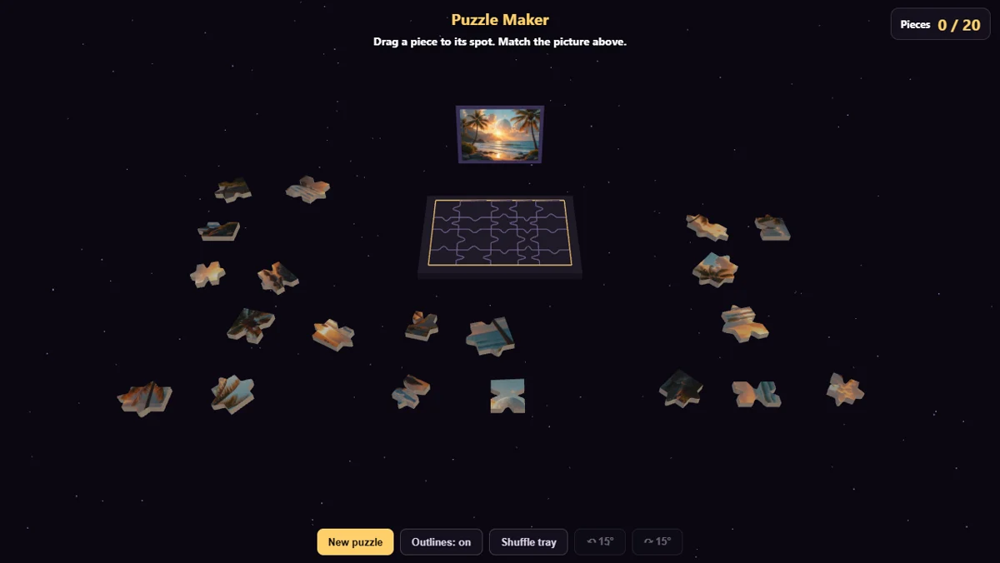
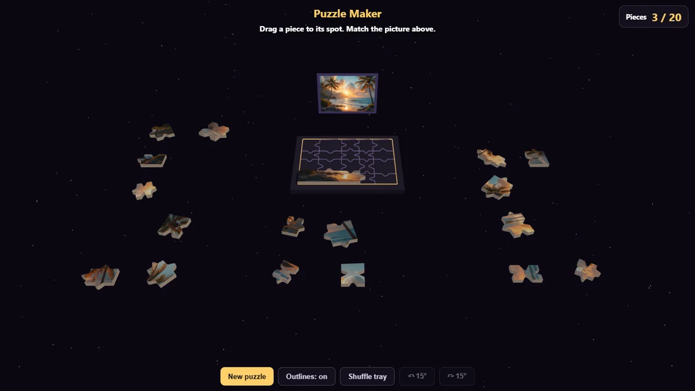

Puzzle Maker
Turn a picture into a 3D jigsaw and solve it solo, together, or in a race.

Objective
Fit every piece into its own slot. Solo and cooperative play celebrate completing the shared picture. In competitive play the person who places the most pieces wins. Equal top scores are a tie.
Pieces and setup
Choose a gallery picture or upload your own for local play. Pick a target of 20 to 1,000 pieces and a hint level. The puzzle adjusts the exact piece count to the picture’s proportions. Loose pieces start around the board at random angles in 15° increments.
Place and rotate
Click or tap a piece to select it. Use the two 15° buttons or Q and E to turn it. Drag it to its slot. It snaps when it is close enough and within 15° of upright for that slot. Outlines can help you see slots. Shuffle tray redistributes loose pieces.
Friends and progress
Solo and same-screen games can use your pictures. Online play supports two to four people and uses the built-in gallery. Everyone plays at once in either mode. Cooperative play shows shared progress. Competitive play credits each piece to the first player whose placement is accepted. A saved local puzzle can be continued from setup.
Strategy
Start with corners and straight edges. Group colors or textures and use the reference picture before rotating many pieces. In cooperative play, split the picture into areas. In competitive play, prioritize distinctive pieces and clear matches.

Developer’s AI assistance philosophy
Kenneth Bingham conceived or adapted the games and directed their development. He gave AI explicit instructions about rules, interfaces, constraints and revisions, then reviewed playable builds and used the results to guide the next changes. AI assisted with implementation, assets and testing under that direction. The process starts with a human design decision and ends with checks against it.
Examples include specifying the supported-stack rule and 2×2×2 score in Cubicles, replacing Puzzle Maker’s turns with simultaneous cooperative and competitive play, and testing a complete 60-move online match in Dots and Boxes.
Credits and fair use
Conceived and designed by Kenneth Bingham as a 3D take on the traditional jigsaw puzzle. Uploaded pictures stay on the player’s device.
Game design, creative direction and AI instructions by Kenneth Bingham. Implementation and production assisted by AI. Third-party names and materials remain the property of their owners. References acknowledge fair use where applicable.